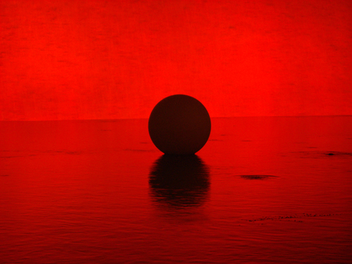
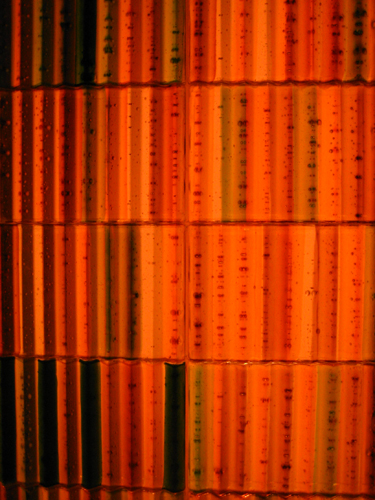
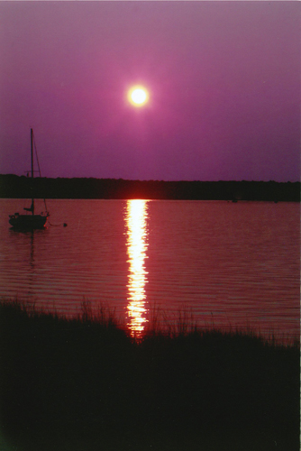
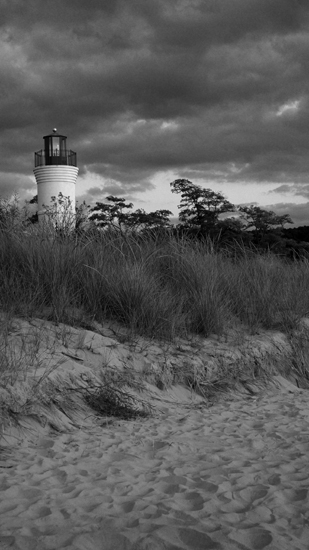

Since the age of 12, I have loved photography, and since then, I have always been advised to frame my photos so that others may enjoy them as well. One of my goals is to start an online portfolio, as well as having various pieces framed and displayed in my personal trainer studio.
Full portfolio to follow!
|  |  |
|  | |
 |